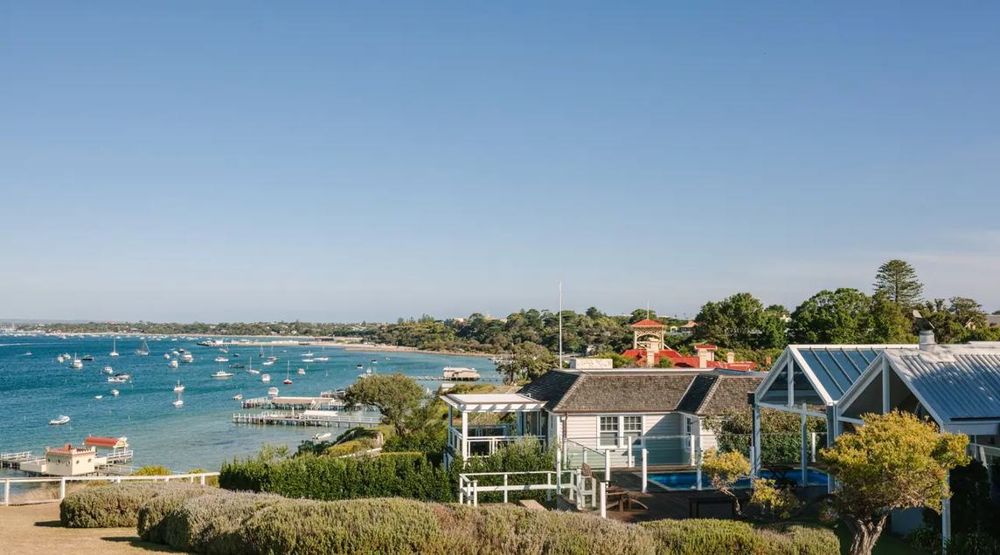

Peninsula Insider
The case for a spring weekend.
Choose less. Stay a little longer. Let the Peninsula set the pace.

Photo · Courtesy of Visit Victoria
Sorrento, Mornington Peninsula.
Read the Journalpeninsulainsider.com.au
Choose less. Stay a little longer. Let the Peninsula set the pace.

Photo · Courtesy of Visit Victoria
Sorrento, Mornington Peninsula.